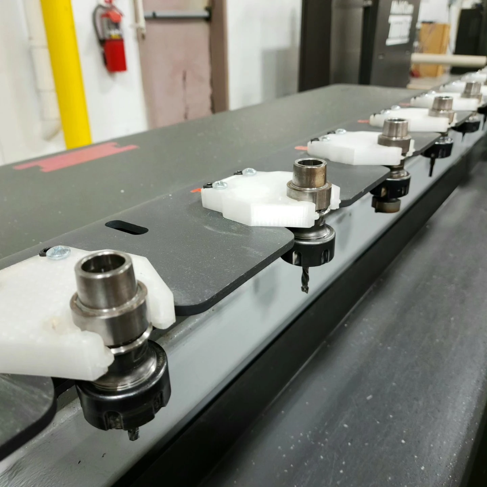
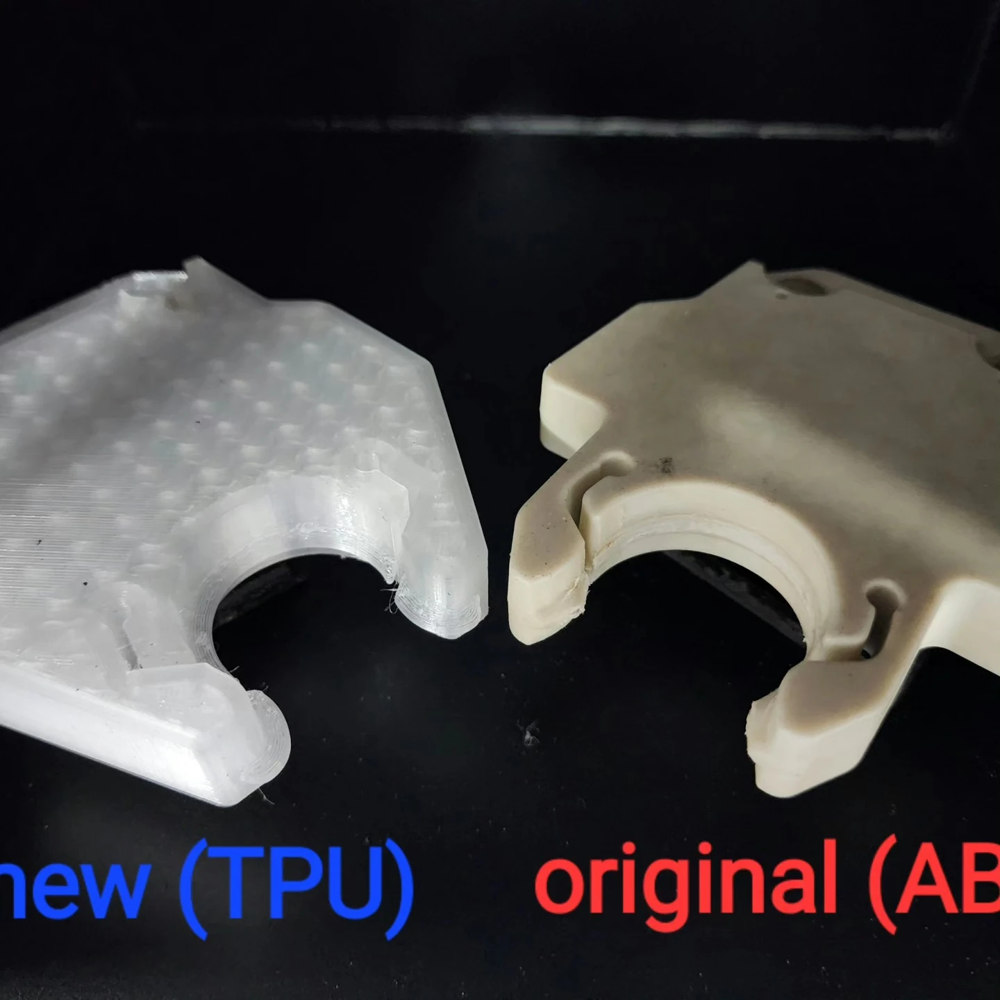
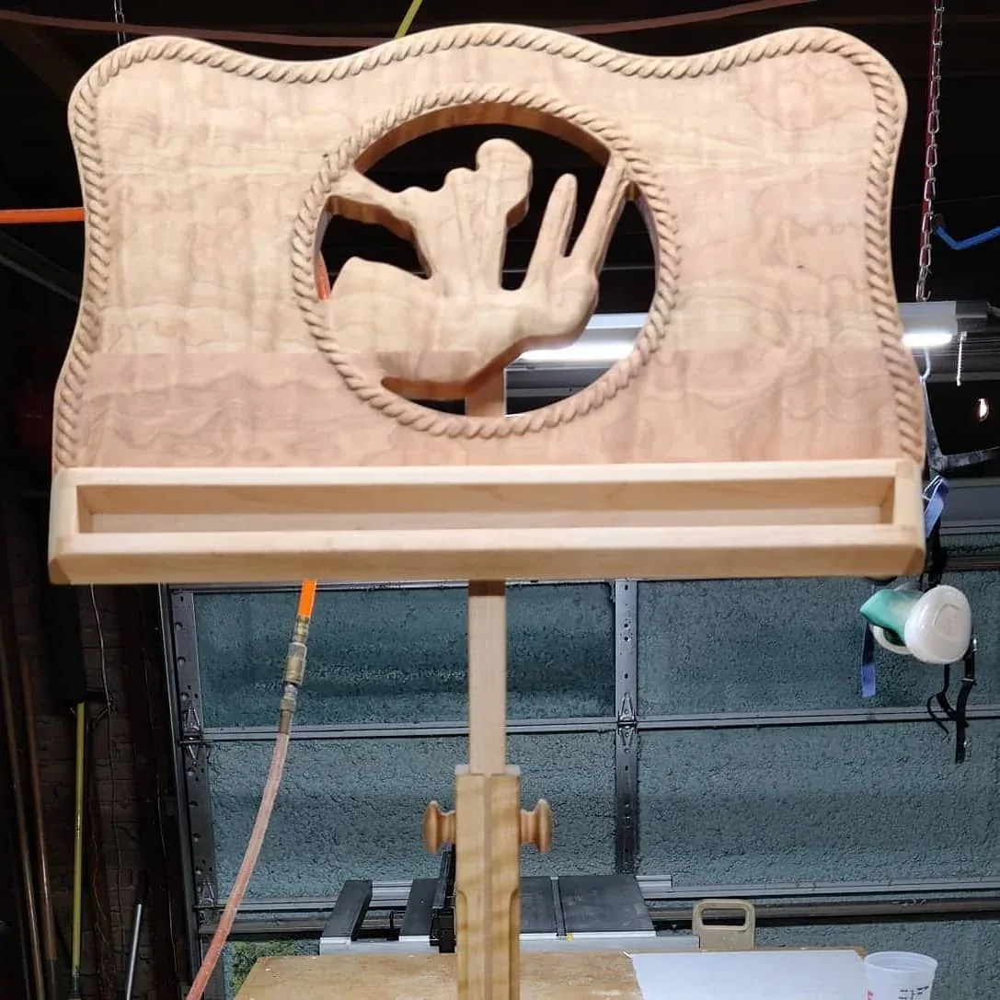
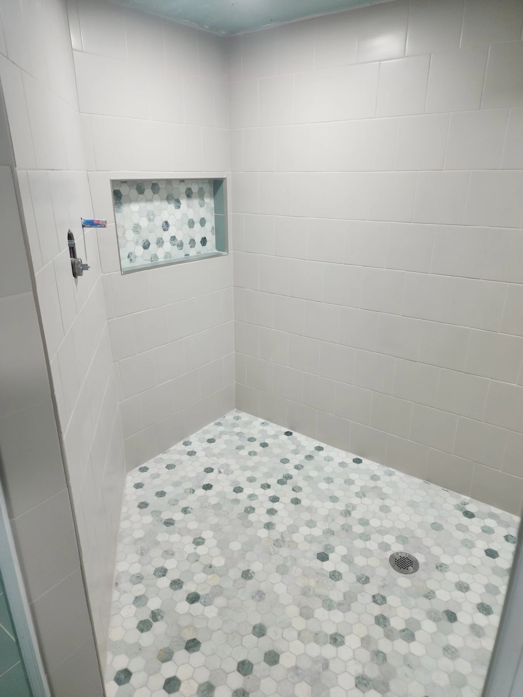
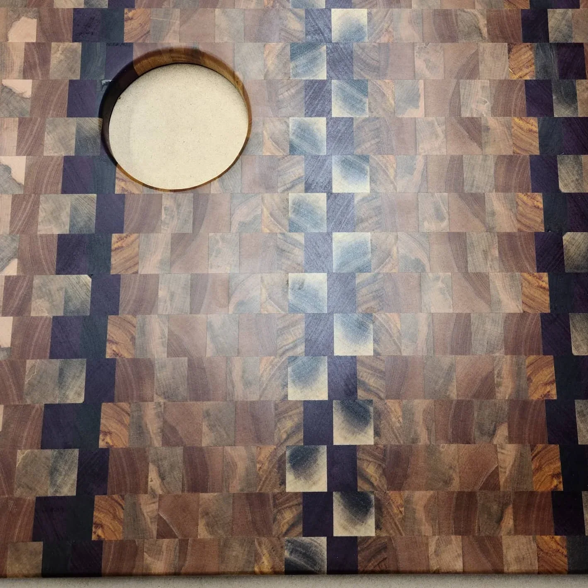
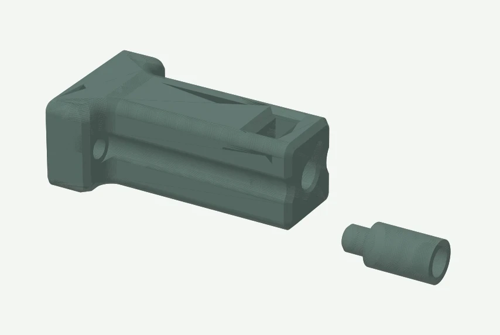
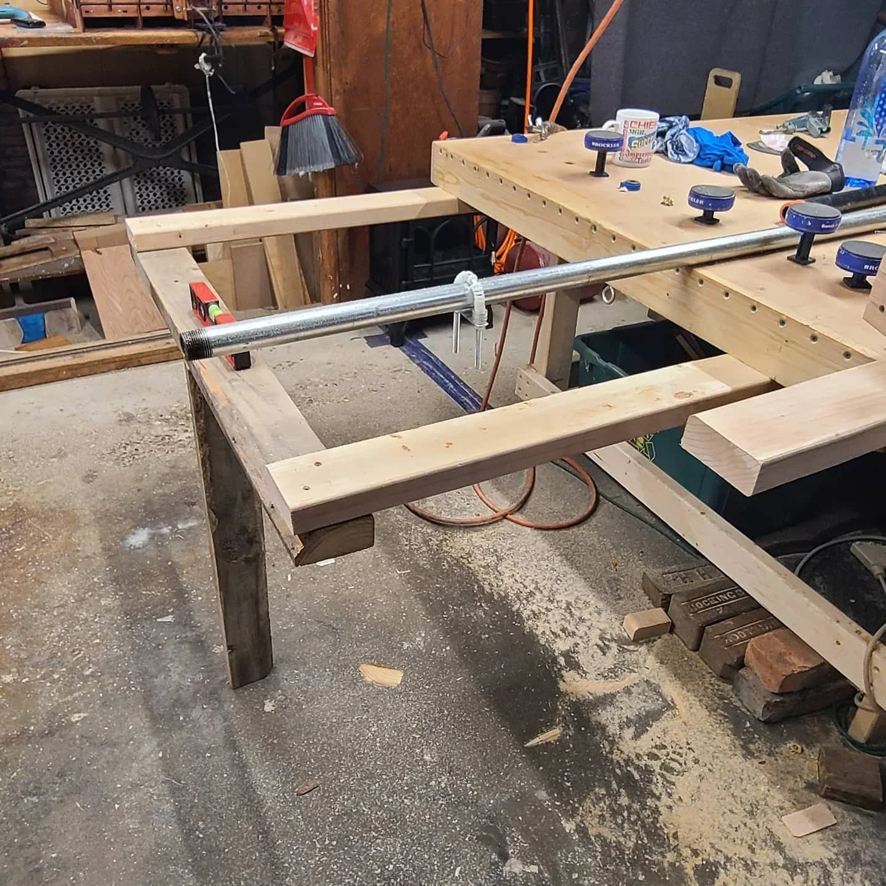
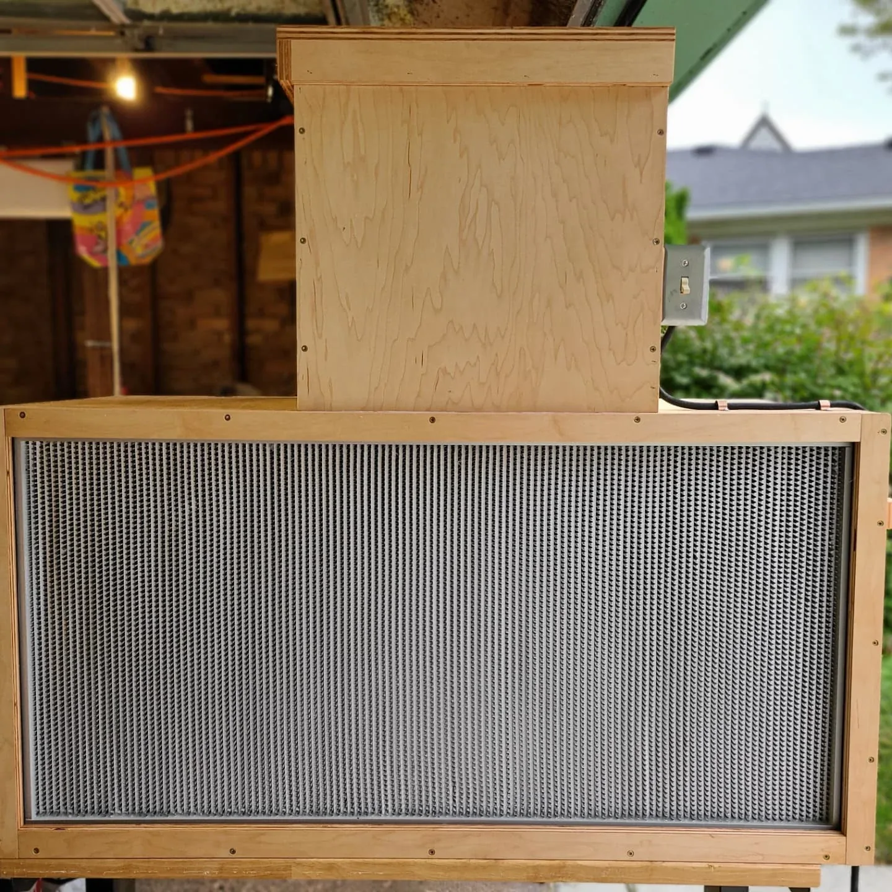
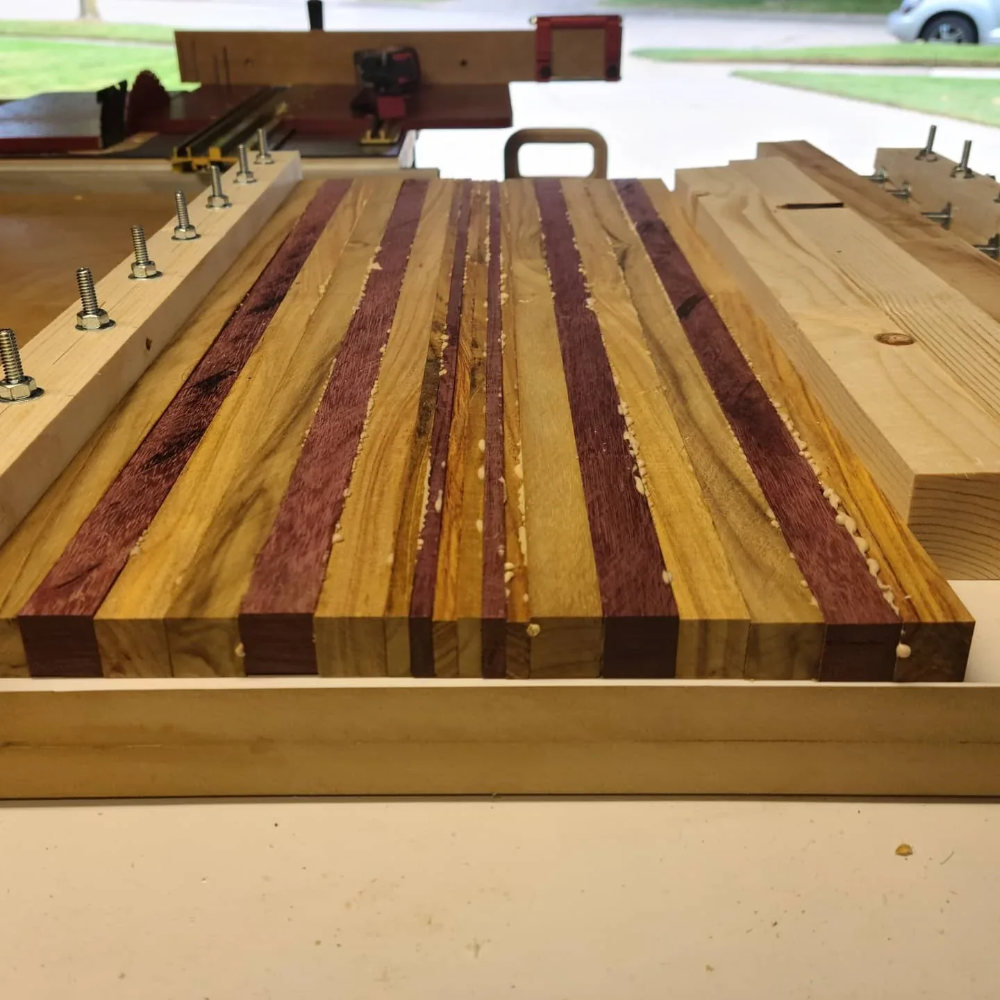
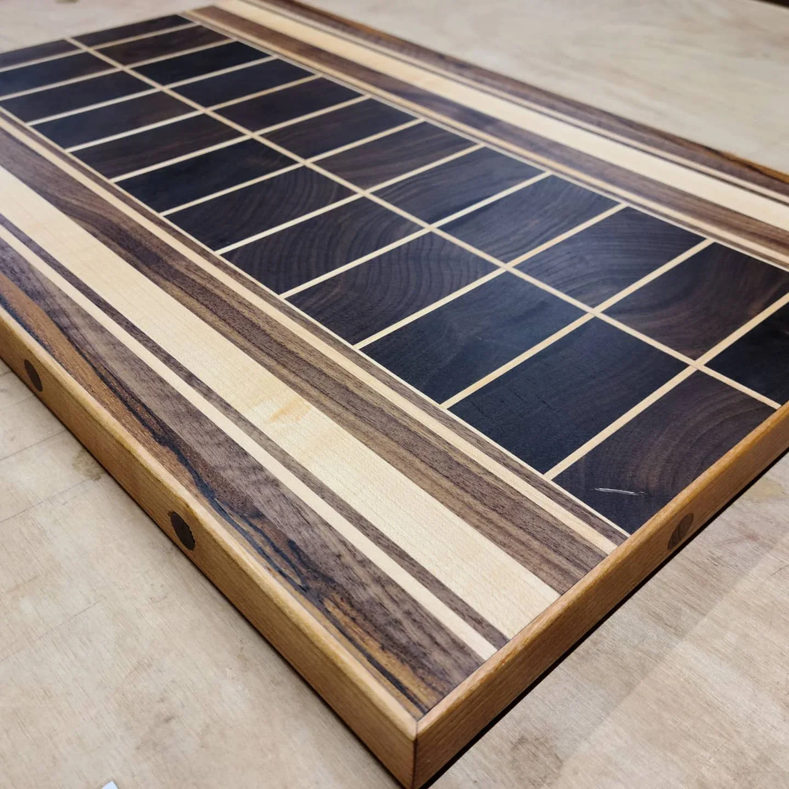

Acoufelt
Engineering ManagerFebruary 2026 - Present
Manufacturing Support SpecialistNovember 2025 - February 2026
PROFESSIONAL VIEW
My background spans construction trades, custom fabrication, CNC operation, and fabrication engineering. At Acoufelt, I focus on the connection between engineering and operations, technical standards and documentation, and developing the engineering team.
Engineering Manager at Acoufelt | Fabrication & Process Engineer

From recurring failure to an installed replacement ↗Technical standards, documentation, scalable systems, and engineering-team support.
CNC, geometric design, additive fabrication, and a hands-on trades background.
Client briefs, shared modifications, and collaborative software-project work.
THE WORK BEHIND THE WORKSHOP
Construction, custom fabrication, CNC work, fabrication engineering, and engineering management.
Full career history & training →Engineering ManagerFebruary 2026 - Present
Manufacturing Support SpecialistNovember 2025 - February 2026
Fabrication EngineerFebruary 2024 - November 2025
CNC operatorApril 2023 - February 2024
OwnerNovember 2019 - February 2024
ApprenticeOctober 2021 - November 2022
Various titles in various tradesJune 2005 - May 2016
Software training: Grand Circus, September-December 2022. Curriculum & project →
A SELECTED ROUTE THROUGH THE WORK
Selected projects with the strongest connection to engineering, fabrication, systems, and implementation.

FEATURED CASE STUDYReverse-engineered in Fusion, printed in TPU on a Voron V0.2, and put to work in the CNC tool rack. A documented response to repeated breakage and replacement cost.
 Build / setup
Build / setupPrinter assembly and integration, with shared M8P-related modifications
Read the project & contribution →
Piece / projectConcept development, CNC learning and fabrication
Read the project & contribution →
Built roomRoom modeling, drawing production, and owner-documented project development
Read the project & contribution →
Piece / projectCustom-fit board fabrication and reinforcement/adjustment detailing
Read the project & contribution →
Piece / projectModification implementation, publication and guidance
Read the project & contribution → Piece / project
Piece / projectReverse engineering and fabrication of a replacement fitting
Read the project & contribution →
Piece / projectReference adaptation, panel fabrication and assembly
Read the project & contribution →
Piece / projectCustom enclosure fabrication and assembly
Read the project & contribution →
Piece / projectFixture design, fabrication, and trial use
Read the project & contribution →
Piece / projectInterpretation of a supplied visual brief, material composition, and fabrication
Read the project & contribution →Data retrieval, aggregation and chart-component integration
Read the project & contribution →THERE IS MORE TO THE STORY
Additional objects, gifts, and experiments are part of the same practice. Explore the full collection for the wider picture.
Back to all projects →DESIGN DETAILS